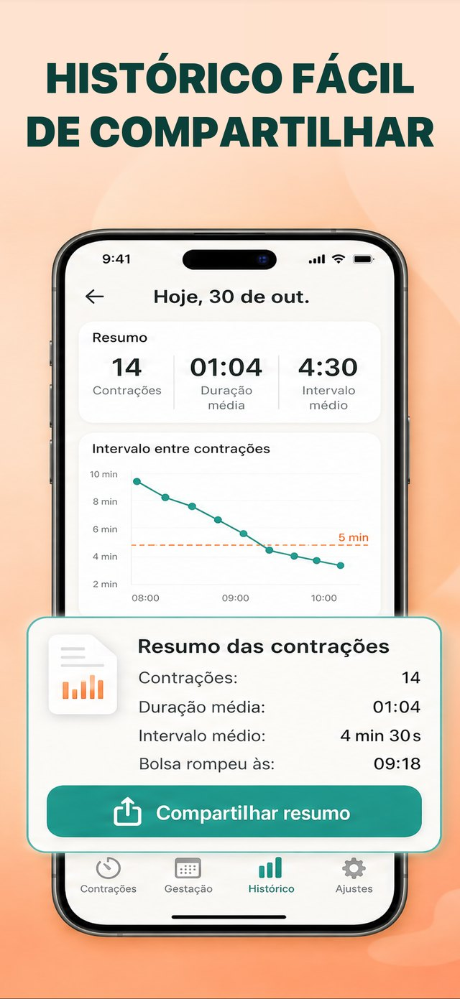
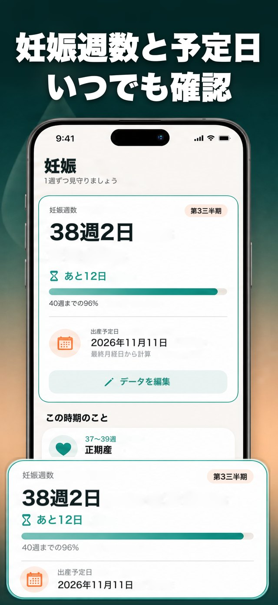
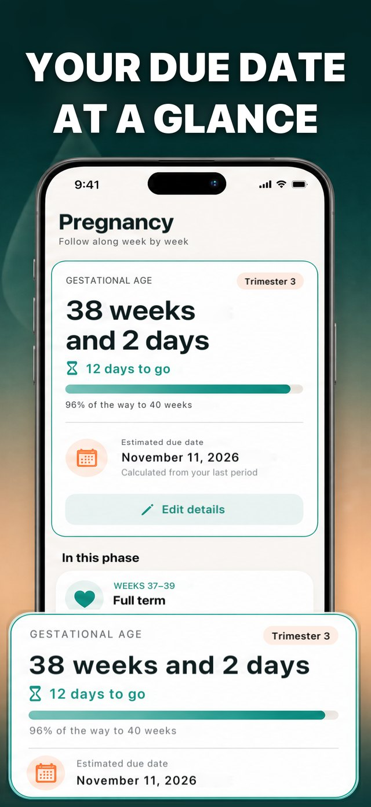
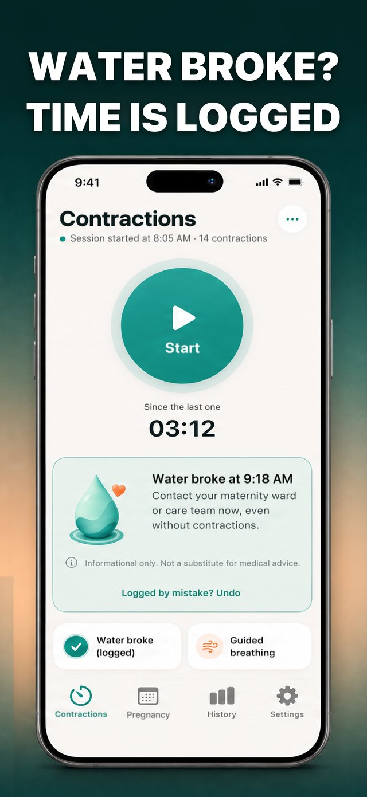
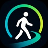

estado lido da ASC em 2026-11-18 17:08 · abrir ASC
Testes A/B
Em desenvolvimento (0)
Esperando seu OK (2)
A — Contador · hora de ir pra maternidade · semanas e DPP · bolsa estourou · histórico pro médico



A · ja — amostra traduzida





A · en-US — amostra traduzida





A — O almanaque da Lua — a lua do seu céu + cabelo, plantio e pesca + calendário


Telas reais (base) — capturas do simulador, pt-BR, 30/10


Aguardando a Apple / Start (0)
Rodando agora (16)
Nenhum no ar
163 downloads na janela · 5/dia · ▼ -13% tendência · US$ 52/mês · veredito WATCH
tráfego 50%Linha de baseImpressões únicas772Conversão6,33%4,97 a 7,90%Melhora—Confiança—
Coletando dadosImpressões únicas227Conversão5,71%3,49 a 8,66%Melhora−9,75%−47,60 a +44,68%Confiança0,1%
Provavelmente será inconclusivoImpressões únicas247Conversão5,91%3,71 a 8,79%Melhora−6,59%−43,39 a +44,95%Confiança0%
Coletando dadosImpressões únicas252Conversão7,24%4,66 a 10,55%Melhora+14,30%−30,33 a +73,78%Confiança0,3%
Outra linha de base (menu da ASC)
vs azul minimalista: Original +10,81% (conf 0,1%) · claro colorido +3,50% (conf 0%) · escuro cidade +26,65% (conf 0,3%)
vs claro colorido: Original +7,06% (conf 0%) · azul minimalista −3,38% (conf 0%) · escuro cidade +22,36% (conf 0,2%)
vs escuro cidade: Original −12,51% (conf 0,3%) · azul minimalista −21,04% (conf 0,3%) · claro colorido −18,27% (conf 0,2%)
escuro cidade


claro colorido


azul minimalista


546 downloads na janela · 18/dia · ▼ -6% tendência · US$ 70/mês · veredito WATCH
tráfego 75%Linha de baseImpressões únicas956Conversão8,36%6,98 a 9,89%Melhora—Confiança—
Coletando dadosImpressões únicas1.021Conversão9,18%7,73 a 10,78%Melhora+9,86%−12,65 a +40,24%Confiança1,1%
Coletando dadosImpressões únicas1.011Conversão8,49%7,13 a 9,99%Melhora+1,57%−19,92 a +28,96%Confiança0,1%
Coletando dadosImpressões únicas1.028Conversão9,15%7,71 a 10,74%Melhora+9,48%−13,71 a +40,29%Confiança1%
Outra linha de base (menu da ASC)
vs A: Original −8,98% (conf 1,1%) · B −7,55% (conf 0,7%) · C −0,35% (conf 0,1%)
vs B: Original −1,55% (conf 0,1%) · A +8,17% (conf 0,7%) · C +7,78% (conf 0,6%)
vs C: Original −8,66% (conf 1%) · A +0,35% (conf 0,1%) · B −7,22% (conf 0,6%)
Treatment A (Estilo de vida claro)


Treatment B (Ilustracao escura)


Treatment C (Cartoes gigantes)


82 downloads na janela · 3/dia · ▼ -26% tendência · US$ 0/mês · veredito KILL
tráfego 75%Linha de baseImpressões únicas653Conversão1,84%1,06 a 2,91%Melhora—Confiança—
Coletando dadosImpressões únicas642Conversão2,08%1,22 a 3,27%Melhora+13,28%−42,37 a +132,63%Confiança0%
Coletando dadosImpressões únicas641Conversão1,55%0,89 a 2,47%Melhora−15,71%−58,66 a +70,27%Confiança0%
Coletando dadosImpressões únicas594Conversão2,08%1,19 a 3,34%Melhora+13,53%−42,47 a +140,06%Confiança0%
Outra linha de base (menu da ASC)
vs A: Original −11,72% (conf 0%) · B −25,59% (conf 0,2%) · F +0,22% (conf 0%)
vs B: Original +18,64% (conf 0%) · A +34,39% (conf 0,2%) · F +34,69% (conf 0%)
vs F: Original −11,92% (conf 0%) · A −0,22% (conf 0%) · B −25,76% (conf 0%)
Treatment A (Neon Purple)


Treatment B (Aurora)


Treatment F (Minimal)


157 downloads na janela · 5/dia · ▼ -24% tendência · US$ 65/mês · veredito WATCH
tráfego 75%Linha de baseImpressões únicas372Conversão6,09%4,15 a 8,53%Melhora—Confiança—
Coletando dadosImpressões únicas408Conversão6,30%4,38 a 8,66%Melhora+3,30%−36,75 a +64,29%Confiança0%
Coletando dadosImpressões únicas344Conversão4,47%2,91 a 6,49%Melhora−26,61%−57,84 a +22,08%Confiança0,7%
Coletando dadosImpressões únicas401Conversão5,20%3,56 a 7,26%Melhora−14,59%−48,97 a +36,53%Confiança0,2%
Outra linha de base (menu da ASC)
vs A: Original −3,19% (conf 0%) · B −28,95% (conf 1,6%) · C −17,32% (conf 0,4%)
vs B: Original +36,25% (conf 0,7%) · A +40,74% (conf 1,6%) · C +16,37% (conf 0,1%)
vs C: Original +17,09% (conf 0,2%) · A +20,95% (conf 0,4%) · B −14,06% (conf 0,1%)
Treatment A (Light clean)


Treatment B (Dark sloth)


Treatment C (Sloth story)


143 downloads na janela · 5/dia · ▼ -21% tendência · US$ 0/mês · veredito WATCH
tráfego 75%Linha de baseImpressões únicas480Conversão6,17%4,48 a 8,20%Melhora—Confiança—
Coletando dadosImpressões únicas488Conversão6,32%4,61 a 8,38%Melhora+2,49%−32,73 a +52,23%Confiança0,1%
Coletando dadosImpressões únicas518Conversão5,47%4,02 a 7,22%Melhora−11,30%−42,09 a +32,27%Confiança0,2%
Coletando dadosImpressões únicas513Conversão6,65%4,91 a 8,73%Melhora+7,83%−29,39 a +58,70%Confiança0,2%
Outra linha de base (menu da ASC)
vs A: Original −2,43% (conf 0,1%) · B −13,46% (conf 0,5%) · C +5,20% (conf 0,1%)
vs B: Original +12,74% (conf 0,2%) · A +15,55% (conf 0,5%) · C +21,56% (conf 1,3%)
vs C: Original −7,26% (conf 0,2%) · A −4,95% (conf 0,1%) · B −17,74% (conf 1,3%)
Treatment A (Sueca no bolso)


Treatment B (Perguntas que fazem rir)


Treatment C (Desafios 10 segundos)


171 downloads na janela · 6/dia · ▲ +6% tendência · US$ 0/mês · veredito WATCH
tráfego 75%Linha de baseImpressões únicas575Conversão2,58%1,62 a 3,85%Melhora—Confiança—
Coletando dadosImpressões únicas589Conversão4,73%3,33 a 6,47%Melhora+83,58%+10,08 a +224,60%Confiança28,9%
Coletando dadosImpressões únicas557Conversão3,91%2,65 a 5,51%Melhora+51,64%−12,46 a +169,15%Confiança1,3%
Coletando dadosImpressões únicas519Conversão2,49%1,50 a 3,81%Melhora−3,53%−49,46 a +76,86%Confiança0%
Outra linha de base (menu da ASC)
vs A: Original −45,53% (conf 28,9%) · B −17,40% (conf 0,7%) · C −47,45% (conf 28,6%)
vs B: Original −34,05% (conf 1,3%) · A +21,06% (conf 0,7%) · C −36,38% (conf 1,3%)
vs C: Original +3,66% (conf 0%) · A +90,29% (conf 28,6%) · B +57,19% (conf 1,3%)
Treatment A (Bolso e alarme)


Treatment B (Tranquilidade)


Treatment C (Controle)


4.510 downloads na janela · 150/dia · → +4% tendência · US$ 1.049/mês · veredito SCALE
tráfego 66%Linha de baseImpressões únicas11.743Conversão6,26%5,89 a 6,63%Melhora—Confiança—
Coletando dadosImpressões únicas11.305Conversão6,12%5,75 a 6,49%Melhora−2,22%−10,44 a +6,08%Confiança0,7%
Coletando dadosImpressões únicas11.315Conversão6,21%5,84 a 6,59%Melhora−0,70%−8,71 a +7,94%Confiança0,2%
Outra linha de base (menu da ASC)
vs A: Original +2,27% (conf 0,7%) · B +1,55% (conf 0,6%)
vs B: Original +0,71% (conf 0,2%) · A −1,52% (conf 0,6%)
Treatment A (Telas traduzidas)


Treatment B (Light mode)


306 downloads na janela · 10/dia · ▼ -5% tendência · US$ 68/mês · veredito SCALE
tráfego 75%Linha de baseImpressões únicas371Conversão10,22%7,79 a 13,05%Melhora—Confiança—
Coletando dadosImpressões únicas356Conversão10,29%7,80 a 13,20%Melhora+0,70%−30,63 a +44,33%Confiança0,1%
Coletando dadosImpressões únicas358Conversão10,12%7,67 a 12,99%Melhora−0,94%−30,25 a +43,97%Confiança0%
Coletando dadosImpressões únicas356Conversão10,43%7,91 a 13,37%Melhora+2,07%−28,88 a +46,63%Confiança0,1%
Outra linha de base (menu da ASC)
vs A: Original −0,70% (conf 0,1%) · B −1,63% (conf 0%) · C +1,36% (conf 0,1%)
vs B: Original +0,95% (conf 0%) · A +1,66% (conf 0%) · C +3,04% (conf 0,1%)
vs C: Original −2,03% (conf 0,1%) · A −1,34% (conf 0,1%) · B −2,95% (conf 0,1%)
Treatment A (Guia de cortes)


Treatment B (Diário e reações)


Treatment C (Variedade por fase)


57 downloads na janela · 2/dia · ▼ -42% tendência · US$ 0/mês · veredito KILL
tráfego 75%Linha de baseImpressões únicas102Conversão5,46%2,38 a 10,33%Melhora—Confiança—
Coletando dadosImpressões únicas106Conversão6,78%3,17 a 12,22%Melhora+23,99%−51,08 a +253,14%Confiança0%
Coletando dadosImpressões únicas101Conversão7,43%3,48 a 13,37%Melhora+35,97%−48,47 a +276,09%Confiança0%
Coletando dadosImpressões únicas93Conversão5,66%2,34 a 11,00%Melhora+3,49%−63,89 a +198,49%Confiança0%
Outra linha de base (menu da ASC)
vs A: Original −19,35% (conf 0%) · B +9,67% (conf 0%) · C −16,53% (conf 0%)
vs B: Original −26,45% (conf 0%) · A −8,81% (conf 0%) · C −23,89% (conf 0%)
vs C: Original −3,37% (conf 0%) · A +19,81% (conf 0%) · B +31,39% (conf 0%)
Treatment A (Frase do dia)


Treatment B (Frase certa)


Treatment C (Arte atual traduzida)


120 downloads na janela · 4/dia · ▼ -10% tendência · US$ 0/mês · veredito WATCH
tráfego 75%Linha de baseImpressões únicas299Conversão4,53%2,77 a 6,87%Melhora—Confiança—
Coletando dadosImpressões únicas281Conversão4,48%2,69 a 6,90%Melhora−1,01%−49,47 a +78,11%Confiança0%
Coletando dadosImpressões únicas293Conversão4,91%3,01 a 7,44%Melhora+8,34%−43,73 a +99,17%Confiança0%
Coletando dadosImpressões únicas318Conversão5,34%3,38 a 7,90%Melhora+17,89%−35,68 a +112,03%Confiança0%
Outra linha de base (menu da ASC)
vs A: Original +1,02% (conf 0%) · B +9,44% (conf 0%) · C +19,09% (conf 0%)
vs B: Original −7,69% (conf 0%) · A −8,63% (conf 0%) · C +8,82% (conf 0%)
vs C: Original −15,18% (conf 0%) · A −16,03% (conf 0%) · B −8,11% (conf 0%)
Treatment A (Placar)


Treatment B (Regras)


Treatment C (Mesa)


172 downloads na janela · 6/dia · ▲ +7% tendência · US$ 82/mês · veredito WATCH
tráfego 75%Linha de baseImpressões únicas385Conversão6,01%4,12 a 8,36%Melhora—Confiança—
Coletando dadosImpressões únicas316Conversão5,28%3,43 a 7,66%Melhora−12,11%−48,25 a +48,38%Confiança0,1%
Coletando dadosImpressões únicas330Conversão5,63%3,71 a 8,08%Melhora−6,32%−43,29 a +59,38%Confiança0%
Coletando dadosImpressões únicas330Conversão5,48%3,60 a 7,87%Melhora−8,82%−46,52 a +52,13%Confiança0,1%
Outra linha de base (menu da ASC)
vs A: Original +13,78% (conf 0,1%) · B +6,59% (conf 0%) · C +3,75% (conf 0%)
vs B: Original +6,75% (conf 0%) · A −6,18% (conf 0%) · C −2,66% (conf 0%)
vs C: Original +9,67% (conf 0,1%) · A −3,61% (conf 0%) · B +2,74% (conf 0%)
Treatment A (Arte atual mais nova)


Treatment B (Panorama B)


Treatment C (Panorama C fundo preto)


3.199 downloads na janela · 107/dia · ▲ +6% tendência · US$ 930/mês · veredito SCALE
tráfego 75%Linha de baseImpressões únicas3.557Conversão11,42%10,56 a 12,32%Melhora—Confiança—
Coletando dadosImpressões únicas3.631Conversão12,08%11,21 a 13,00%Melhora+5,81%−4,66 a +18,38%Confiança2,2%
Coletando dadosImpressões únicas3.688Conversão10,70%9,89 a 11,55%Melhora−6,32%−15,61 a +4,78%Confiança8%
Coletando dadosImpressões únicas3.682Conversão12,18%11,30 a 13,09%Melhora+6,62%−4,11 a +18,64%Confiança7,8%
Outra linha de base (menu da ASC)
vs A: Original −5,49% (conf 2,2%) · B −11,46% (conf 54,8%) · C +0,77% (conf 0,6%)
vs B: Original +6,74% (conf 8%) · A +12,94% (conf 54,8%) · C +13,81% (conf 82,4%)
vs C: Original −6,21% (conf 7,8%) · A −0,76% (conf 0,6%) · B −12,14% (conf 82,4%)
Treatment A (Arte atual elevada)


Treatment B (Icone 1)


Treatment C (Icone 1)



Walk: Steps & Calorie Tracker — Prints A-B-C 2026-10-27233 downloads na janela · 8/dia · ▼ -7% tendência · US$ 15/mês · veredito WATCH
tráfego 75%Linha de baseImpressões únicas303Conversão7,44%5,07 a 10,40%Melhora—Confiança—
Coletando dadosImpressões únicas300Conversão6,32%4,25 a 8,93%Melhora−15,01%−48,00 a +43,64%Confiança0,1%
Coletando dadosImpressões únicas327Conversão7,00%4,82 a 9,69%Melhora−5,97%−43,16 a +53,89%Confiança0%
Coletando dadosImpressões únicas311Conversão6,22%4,21 a 8,74%Melhora−16,37%−49,35 a +38,72%Confiança0,2%
Outra linha de base (menu da ASC)
vs A: Original +17,67% (conf 0,1%) · B +10,64% (conf 0,1%) · C −1,60% (conf 0%)
vs B: Original +6,35% (conf 0%) · A −9,62% (conf 0,1%) · C −11,06% (conf 0,1%)
vs C: Original +19,58% (conf 0,2%) · A +1,63% (conf 0%) · B +12,44% (conf 0,1%)
Treatment A (Widget e meta)


Treatment B (Celebre cada meta)


Treatment C (Panorama C)


49 downloads na janela · 2/dia · ▲ +12% tendência · US$ 0/mês · veredito KILL
tráfego 66%Linha de baseImpressões únicas71Conversão6,95%2,56 a 14,34%Melhora—Confiança—
Coletando dadosImpressões únicas57Conversão4,35%1,03 a 11,35%Melhora−37,33%−87,21 a +143,51%Confiança0%
Coletando dadosImpressões únicas65Conversão6,51%2,18 a 14,17%Melhora−6,31%−74,60 a +238,73%Confiança0%
Outra linha de base (menu da ASC)
vs A: Original +59,56% (conf 0%) · C +49,50% (conf 0%)
vs C: Original +6,73% (conf 0%) · A −33,11% (conf 0%)
Treatment A (Frase real com audio)


Treatment C (Claro carreira)


4 downloads na janela · 0/dia · → +0% tendência · US$ 0/mês · veredito KILL
tráfego 75%Linha de baseImpressões únicas8Conversão24,37%2,05 a 70,10%Melhora—Confiança—
Coletando dadosImpressões únicas15Conversão12,90%1,02 a 44,94%Melhora−47,07%−96,78 a +492,45%Confiança0,6%
Coletando dadosImpressões únicas20Conversão8,26%0,64 a 31,09%Melhora−66,12%−98,34 a +303,45%Confiança1,2%
Coletando dadosImpressões únicas12Conversão18,13%1,47 a 57,88%Melhora−25,60%−93,97 a +744,38%Confiança0,6%
Outra linha de base (menu da ASC)
vs A: Original +88,94% (conf 0,6%) · B −35,99% (conf 0%) · C +40,58% (conf 0,1%)
vs B: Original +195,19% (conf 1,2%) · A +56,23% (conf 0%) · C +119,63% (conf 0,2%)
vs C: Original +34,40% (conf 0,6%) · A −28,87% (conf 0,1%) · B −54,47% (conf 0,2%)
Treatment A (Cofre de documentos)


Treatment B (Scanner PDF)


Treatment C (Busca OCR claro)


18 downloads na janela · 1/dia · ▲ +57% tendência · US$ 0/mês · veredito KILL
tráfego 75%Linha de baseImpressões únicas105Conversão1,43%0,11 a 6,05%Melhora—Confiança—
Coletando dadosImpressões únicas89Conversão1,87%0,14 a 7,84%Melhora+30,45%−94,45 a +2425,77%Confiança0%
Coletando dadosImpressões únicas82Conversão1,97%0,15 a 8,24%Melhora+37,32%−92,49 a +2615,49%Confiança0%
Coletando dadosImpressões únicas100Conversão1,49%0,11 a 6,28%Melhora+3,88%−93,08 a +2075,19%Confiança0%
Outra linha de base (menu da ASC)
vs A: Original −23,34% (conf 0%) · B +5,26% (conf 0%) · C −20,37% (conf 0%)
vs B: Original −27,18% (conf 0%) · A −5,00% (conf 0%) · C −24,35% (conf 0%)
vs C: Original −3,73% (conf 0%) · A +25,58% (conf 0%) · B +32,19% (conf 0%)
Treatment A (Titulo da casa)


Treatment B (Sentimento editorial)


Treatment C (Versiculo na tela de bloqueio)